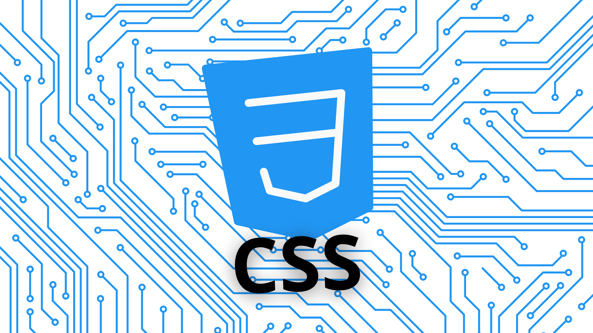

.svg)
CSS
CSS (Cascading Style Sheets) define a aparência de páginas HTML, separando conteúdo e estilo visual para facilitar a formatação estética em várias mídias.

Cascading Style Sheets ou CSS tem a tarefa de separar o conteúdo do site de sua apresentação visual, alterando elementos como cor do texto, fonte e espaçamento entre blocos, assim como todo o aspecto estético de uma página.
CSS (Folhas de Estilo em Cascata) permite a você criar páginas web agradáveis.O CSS foi desenvolvido em 1996, pelo World Wide Web Consortium, para complementar o HTML, uma vez que este não contém tags para formatação de página, sendo necessária a escrita da marcação para o site. Esse processo se tornou desgastante e caro para desenvolvedores. Por essa razão, uma nova alternativa foi criada.O CSS tem a tarefa de separar o conteúdo do site de sua apresentação visual, alterando elementos como cor do texto, fonte e espaçamento entre blocos, assim como todo o aspecto estético de uma página.CSS (Cascading Style Sheets ou Folhas de Estilo em Cascata) é uma linguagem de estilo usada para descrever a apresentação de um documento escrito em HTML ou em XML (incluindo várias linguagens em XML como SVG, MathML ou XHTML). O CSS descreve como elementos são mostrados na tela, no papel, na fala ou em outras mídias.
CSS é uma das principais linguagens da open web e é padronizada em navegadores web de acordo com as especificações da W3C. Desenvolvido em níveis, o CSS1 está atualmente obsoleto, o CSS2.1 é uma recomendação e o CSS3, agora dividido em pequenos módulos, está progredindo para a sua padronização.